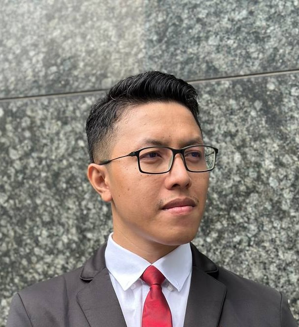

Francis Nolan Barola

Summary
With over 8 years of experience in the IT industry, Francis has contributed to the successful delivery and support of various projects, helping teams develop high-quality solutions aligned with business and client requirements.
Throughout his career, he has gained extensive experience in Oracle Application development and support.
He believes that continuous learning is more valuable than simply pursuing monetary gain. He strives to become 1% better every day while using his skills to help companies, clients, entrepreneurs, and organizations solve problems and create meaningful solutions.
Today, he continues to expand his skills beyond traditional software development, pursuing his passion for game development and digital illustration with the long-term goal of becoming his best version in both fields.
“Kaizoku ou ni, ore wa naru!”
Education
-
Bachelor of Science in Computer Science
Cavite State University (2011-2016)
Work Experience
-
Quality Assurance Analyst - KForce Global Solutions
July 2016 – March 2017
Role: User Acceptance Tester
- Tested applications to ensure high quality and error-free deliverables.
- Documented findings and coordinated with developers to ensure timely resolution.
-
Senior Software Engineer - Accenture, Inc.
June 2017 – October 2022
Role: Oracle EBS Application Support
- Investigates, analyzes and helps business users solve the issues they encounter while using Oracle EBS Application.
Role: Oracle EBS Application Developer
- Helps the project build Oracle applications for generating business Reports.
Role: Data Engineer
- Helps the project build Mulesoft applications and SQL Batch files for collecting, transforming, and migrating data from Salesforce Cloud to Oracle Database and vice versa.
Role: Oracle Support
- Helps the project with the day-to-day extraction, preparation and ensuring the data that will be loaded across different Oracle database schemas are correct.
-
Software Engineer - Manulife Philippines, Inc.
December 2023 – Present
Role: Oracle Application Developer
- Helps with the migration of Oracle Forms, Reports and Database Objects to the Cloud.
- Helps the project build Oracle and Java applications.
- Helps the project investigate, analyze and solve Production issues.
Technical Skills
- Oracle Database, SQL, PL/SQL, Oracle Forms & Reports, Basic Java, Basic Data Migration, Basic ETL/Data Transformation, Cloud Migration, Oracle Application Development, Troubleshooting, Root Cause Analysis, Technical Documentation, Business User Support
Professional Skills
- Technical Documentation, Business User Communication, Requirements Understanding, Analytical Thinking, Problem Solving, Attention to Detail, Cross-functional Collaboration, Issue Resolution, Technical Investigation
Key Achievements
- Successfully supported enterprise applications and production environments, investigating and resolving technical issues to maintain smooth business operations.
- Contributed to the development of Oracle and Java applications.
- Investigated and resolved production and application issues, collaborating with business users and technical teams to minimize operational impact.
- Supported the migration of legacy Oracle Forms, Reports, and Database Objects to the Cloud, contributing to application modernization initiatives.
Other